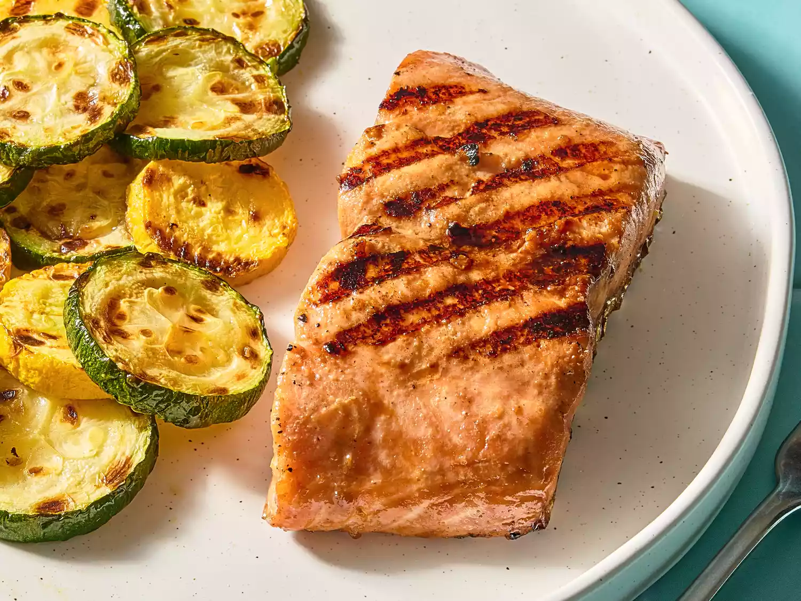

Grilled Salmon
This grilled salmon taste so amazingly good!

A simple soy sauce and brown sugar marinade, with hints of lemon and garlic, are the perfect salty-sweet complement to rich salmon fillets.
Ingredients
- 1 1/2 lbs salmon Fillet
- lemon pepper to taste
- garlic powder to taste
- salt to taste
- 1/3 cup soy sauce
- 1/3 cup brown sugar
- 1/3 cup water
- 1/4 cup vegetable oil
Directions
- Gather all Ingredients
- Season salmon fillets with lemon pepper, garlic powder, and salt
- Stir soy sauce, brown sugar, water, and vegetable oil together in a small bowl untill sugar is dissolved. Place fish in a large resealable bag; add soy sauce mixture, seal, and turn to coat. Refrigerate for at least 2 hours.
- Preheat grill for medium heat and lightly oil the grate.
- Place salmon on the preheated grill, and discard remaining marinade.
- Cook salmon untill fish flakes easily with a fork, about 6 to 8 minutes per side.
- Serve and enjoy with your favorite side!!